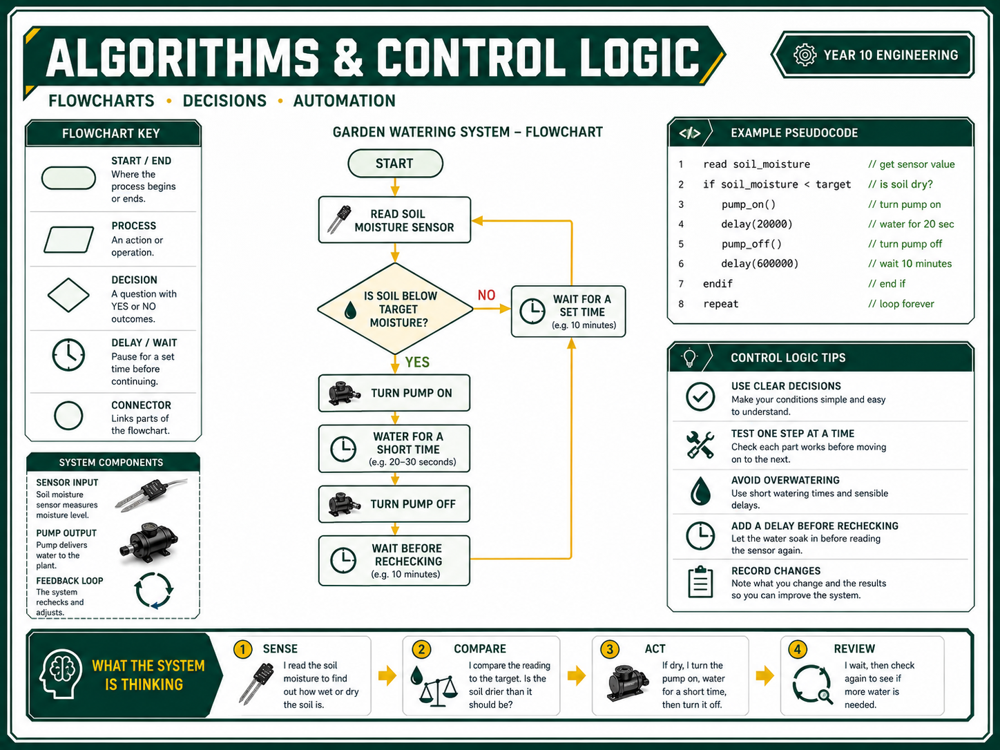

Identify project hazards: explain the risks created when water, low-voltage electronics, tools, pumps, tubing and moving parts are used in the same build.
Set up safe test zones: separate the wet area from the dry electronics area, route leads safely and control spills immediately.
Apply the hierarchy of control: choose controls that reduce risk before relying on PPE alone.
Use tools and components safely: drill, cut, trim, connect and test only after demonstration, permission and teacher checks.
Collect folio evidence: save OnGuard/WHS proof, risk tables, safe setup sketches, teacher sign-off notes and short safety reflections.
Why This Matters
This project puts water and electronics close together. That is manageable, but only if the setup is deliberate. Most control system failures are boring little mistakes: loose wires, wet benches, poor strain relief, a tube popping off, a pump running dry, or someone powering a circuit before it has been checked.
Safety mindset: test small, check before power, keep wet and dry zones separate, and stop early when something looks wrong. Hero testing is not engineering. It is just expensive confidence.
Use this toolkit before the practical build, then keep returning to it whenever the design changes. Every design change can create a new hazard.
Project Safety Map
Wet Zone
Water container, plant tray, soil, tubing, pump outlet and spill area.
Keep towels, trays or catch containers ready before testing.
Stop testing if water escapes the planned area.
Dry Electronics Zone
Battery pack, controller, relay, switch, exposed joins and laptop if used.
Keep raised, dry and away from the water path.
Dry hands before touching circuits or switches.
Tool Zone
Drilling, cutting, trimming and assembly area.
Clamp small parts and wear eye protection.
Keep loose wires, tubing and offcuts away from drill bits and blades.
Teacher Check Point
Before first powered test.
Before adding water near any circuit.
After any wiring, pump, relay or tube route changes.
Risk Control Table
Use this model to build your own risk table in the folio. The goal is not to write more words. The goal is to think before the mess happens.
Hazard
Risk Level
Control
Evidence
Water reaches exposed wires, battery terminals or controller.
High
Separate wet and dry zones, raise electronics, power off before adjusting, teacher check before testing.
Labelled setup sketch or photo.
Pump runs dry or tubing detaches under pressure.
Medium
Check water level, secure tubing, run short tests first and stop if flow changes unexpectedly.
Testing checklist and teacher observation.
Drilling or cutting small parts causes slipping or flying chips.
Medium
Wear eye protection, clamp work, use correct tool speed, keep hands out of the line of fire.
WHS sign-off and build photo.
Loose leads or tubing create trip, snag or pull hazards.
Low
Route leads around the edge of the bench, tape or tie them where needed, keep walkways clear.
Safe setup photo.
Hierarchy of Control
Use the hierarchy of control when choosing safety controls. Strong controls change the setup. Weak controls just hope people remember.
Eliminate: remove unnecessary wet testing near circuits. Test code or switch logic without water first.
Substitute: use teacher-approved low-voltage components instead of mains-powered devices.
Engineering controls: use trays, clamps, strain relief, guards, raised electronics platforms and fixed tube routes.
Administrative controls: follow the test sequence, use checklists, label wet/dry zones and get teacher sign-off.
PPE: use safety glasses, apron/overalls and enclosed footwear. PPE supports the controls above. It does not replace them.
Folio sentence starter: The strongest control in my design is _____ because it reduces the hazard before anyone needs to rely on PPE.
Safe Testing Sequence

Dry build check: inspect wiring, polarity, joins, tube route, pump direction and component mounting.
Teacher check: get approval before powering a new circuit or adding water near the system.
Power-only test: test switches, sensor readings, LEDs or control logic without water flow.
Short water test: run the pump or valve briefly with the electronics protected and the water path contained.
Observe and record: note leaks, flow rate, sensor behaviour, delays, unexpected movement and stop conditions.
Improve safely: power off before adjusting tubes, wires, sensors or mounting points.
Activities & Folio Evidence
1. OnGuard / WHS Evidence
Complete the required workshop safety tasks set by your teacher.
Save a screenshot, certificate or teacher sign-off note as evidence.
2. Safe Test Setup Sketch
Draw or photograph the planned test area.
Label: wet zone, dry electronics zone, power source, water path, spill control, teacher check point and emergency stop method.
3. Risk Control Table
Include at least five hazards: water/electronics, tools, pump/tubing, moving parts and trip/snag risks.
For each hazard, list the risk, control and evidence you will collect.
4. Reflection
Answer: What is the highest-risk part of your system, and what control will reduce that risk the most?
Submit these items in the Google Classroom topic your teacher sets for Year 10 Semester 1 Toolkit 1:
OnGuard/WHS completion proof or teacher sign-off.
Safe test setup sketch or labelled photo.
Risk control table for the Garden Watering System.
Short reflection on the highest-risk part of the system.
WHS Self-Check
Write your answer first. Then reveal the model answer and score yourself honestly. Saved answers stay in this browser.
Why must the wet zone and dry electronics zone be physically separated during testing?
Water can short circuits, damage components, cause unreliable sensor readings and create slip hazards. Separation makes the system easier to inspect and lets the teacher check the setup before power and water are used together.
Give two higher-level controls that are stronger than simply wearing PPE.
Examples include eliminating wet testing near circuits, using low-voltage components, raising electronics on a dry platform, securing tubing in a tray, clamping parts before drilling, and using a teacher-approved test sequence.
What should you check before the first powered test of a pump, relay or controller?
Check polarity, loose wires, exposed joins, tube route, pump direction, water level, dry electronics position, clear bench space and stop method. A teacher check is required before powering the system.
Why should powered water tests be short at first?
Short tests reduce the chance of spills, pump damage, overheating and uncontrolled flow. They also make it easier to observe leaks, tube movement and sensor behaviour before the system runs for longer.
What evidence should appear in your folio for Toolkit 1?
A strong folio includes OnGuard/WHS proof, a labelled safe test setup sketch or photo, a risk control table, teacher sign-off notes and a reflection explaining the highest-risk part of the system and the best control.
If water reaches the dry electronics zone, what should happen next?
Stop testing, power off if it is safe, tell the teacher, clean and dry the area, inspect components and change the setup before testing again. Do not keep testing just because it still seems to work.
How can a design change create a new WHS risk?
Moving a sensor, pump, battery, tube or controller can change where water flows, where wires sit, how parts move and whether a person can trip, snag or touch a hazard. The risk table should be updated after important changes.
Why is teacher sign-off part of the safety system, not just a classroom rule?
Teacher sign-off is an administrative control. It adds an experienced check before higher-risk actions, especially when power, water, tools or moving outputs are involved.